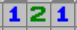
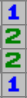
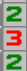

Welcome to Minesweeper! In this game, you utilize your mouse to click on tiles and try to locate the mines.
To reveal the content of a hidden tile, simply left click on them.
If it is a mine, you blow up and lose. Ouch!
If it is safe, a revealed tile will show a number from 1 through 8.
These numbers represent the amount of mines touching the tile.
If you suspect a tile of being a mine, you can flag it with right click. Flags help to prevent misclicks, and enables "chording".
This is all you really need to know. The rest of this page is very wordy and discusses advanced strategies.
Advanced
Efficiency
If you have found the nearby mines (via flagging), you can left click a number tile to 'chord'.
Chording is a key part of efficiency in Minesweeper, and it is a good tool to use to quickly solve puzzles.
Flags can be a waste of a click and can slow you down.
A good strategy (smart-chording) is to think several clicks ahead, and if your logic is correct, you may open a ton of tiles by chording with just a flag or two.
Always be wary when you chord since if you flag incorrectly, you can also lose.
Strategy
Minesweeper requires a lot of strategic thinking and confirmations.
The two main things the game will be challenging you on is your ability to recognize patterns and your clicking speed.
You must be able to recognize various patterns with the numbers and be able to subtract nearby mines to assist your thinking.
There may be oddities such as mandatory guessing, which really can be a bummer. It is typically more common on larger boards with more mines.
Clicking is very important for obvious reasons. You must be quick and precise, if you want to get a faster time.
On the topic of precisity, missing clicks can lead to unintentional mistakes which really stinks.
Patterns
There are many recognizable patterns within the game of Minesweeper.
Knowing these patterns + having the ability to subtract nearby mines can severely help your ability to progress.
In the midst of that however, it can be pretty tricky, so when you're stuck, I'd suggest taking your time and attempting to recognize any patterns!
Below you will see some attached pictures of some of the more common patterns, and which tiles specifically are mines.

As you can see here, the 1s are the mines, that's where the 2 comes from.

As for here, the 2s are the mines. The 1s are next to one of those two mines, which is where that comes from.

And here, the 3 is touching two mines next to a center mine; making it three mines.